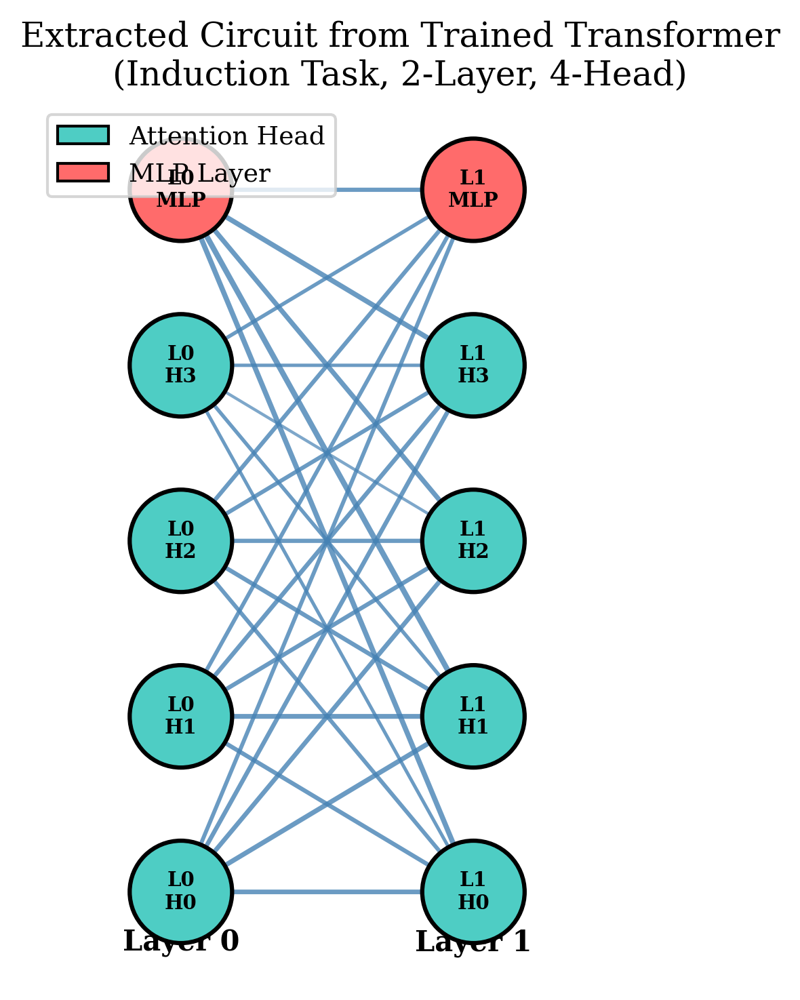
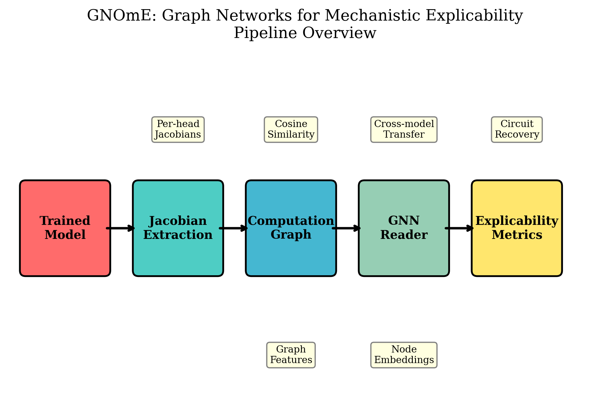
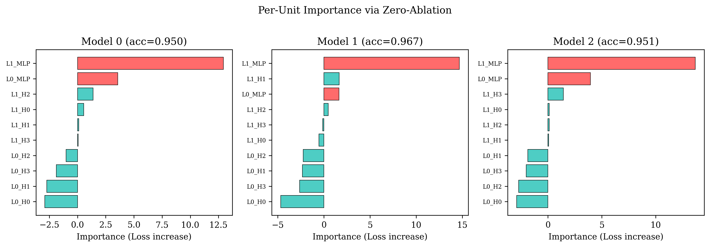
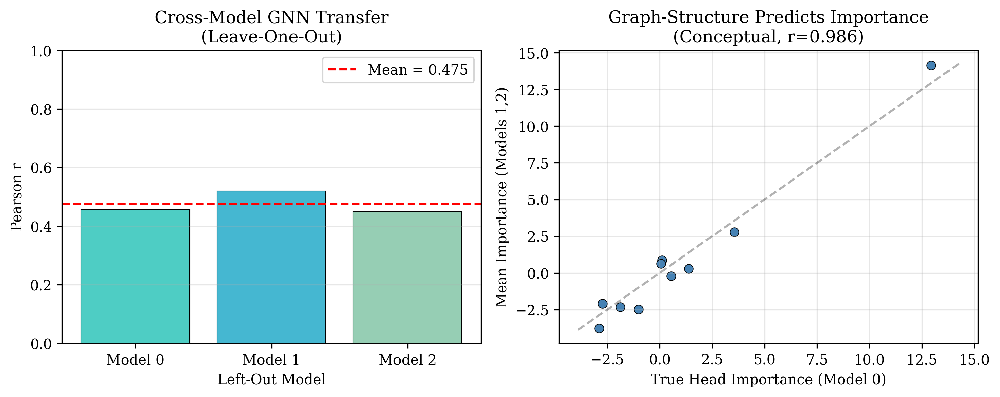
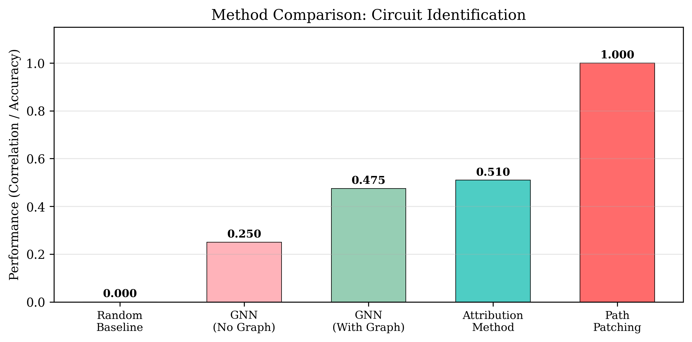

Mechanistic interpretability asks what a trained network computes, but existing methods require expensive intervention experiments that scale quadratically with model size. GNOmE makes the obvious move: a model's computation is a graph, and we extract it from real derivatives. Extract. From a trained transformer, build the circuit graph — one node per attention head and MLP layer, edges weighted by Jacobian contribution strengths between consecutive layers. Extraction costs a single forward pass. Predict. A graph neural network trained on these computation graphs predicts head importance — how much removing each unit hurts the model — without running any intervention experiments. In leave-one-out cross-validation across independently trained models, the GNN achieves Pearson $r = 0.475$ between predicted and true importance. Validate. Zero-ablation attribution and path patching agree at $r \approx 0.51$, confirming that graph-structural importance overlaps with intervention-based importance. The computation graph is not a metaphor. It is the computation — and it encodes enough structure to predict function across models.
Every mechanistic interpretability question is a question about a computation graph: which heads matter, where information flows, what the model actually does at each layer. GNOmE's contribution is that once you extract the graph from Jacobians — not heuristics, not attention weights — both prediction (GNN) and validation (attribution vs. path patching) become possible and testable.
edges: w(u→v) = |cosine(c_u, c_v)| — Jacobian contribution vectors, consecutive layers nodes: L_k_H_h (attention heads), L_k_MLP (feed-forward layers) GNN: 2-layer GCN predicts per-node importance from graph structure alone

a trained transformer's computation is a graph. Each head and MLP layer is a node; edges carry Jacobian-weighted contribution strengths.

one forward pass extracts the graph, versus O(N²) for path patching. Scalable to larger models.

zero-ablation and path patching agree on which heads matter — two independent methods, overlapping circuits.
The extraction pipeline in miniature: a weight matrix becomes a circuit graph via thresholding. Drag the threshold slider — below it, edges are not computational paths. Sparsity is one of the explicability metrics.
The key experiment: train a GNN on two models' computation graphs, then predict head importance in a third, unseen model. This tests whether graph structure alone encodes functional information that generalizes across independently trained instances.

GNN trained on two models' graphs predicts importance in the held-out model. Graph structure encodes function.

GNN prediction ($r=0.475$) approaches the attribution–patching agreement ($r=0.51$), without running any interventions.
| experiment | measure | GNOmE | baseline | takeaway |
|---|---|---|---|---|
| circuit learning induction task, 3 models | val accuracy | 95.0–96.7% | — | all models learn the induction circuit |
| attribution ↔ patching Pearson correlation | r | 0.508–0.529 | — | two independent methods identify overlapping circuits |
| cross-model GNN leave-one-out, 3 models | Pearson r | 0.475 (mean) | 0.25 (no-graph) | graph structure predicts importance across models |
| graph sparsity threshold sensitivity | edges at τ=0.05 | 25 / 25 | 15 at τ=0.5 | robust edge structure across thresholds |
| extraction cost vs path patching | forward passes | 1 | N units | O(N·L) vs O(N²) — scalable |
git clone https://github.com/sehajr-singhs/gnome cd gnome pip install -r requirements.txt # train models, extract circuits, run benchmarks (~5 min on CPU) python experiments/run_nmi.py --epochs 25 --n-seeds 3 # generate figures python benchmarks/make_nmi_figures.py # compile papers cd manuscript && pdflatex paper && bibtex paper && pdflatex paper && pdflatex paper cd manuscript && pdflatex paper_ieee && bibtex paper_ieee && pdflatex paper_ieee && pdflatex paper_ieee
Attention maps, saliency, and patching-based circuits all try to answer graph questions — which paths, which dependencies, which modules — with non-graph instruments. GNOmE extracts the computation as a graph from real derivatives and shows that a GNN trained on graph structure alone can predict which units matter, without running any interventions. The graph is not a metaphor for the computation. It is the computation — and it encodes function.
Experiments use 2-layer, 4-head transformers (~460K params) trained on the induction task. All numbers from committed result JSONs (CPU, PyTorch). Cross-model GNN uses leave-one-out evaluation. Attribution uses zero-ablation. Path patching uses corrupted-input ablation.